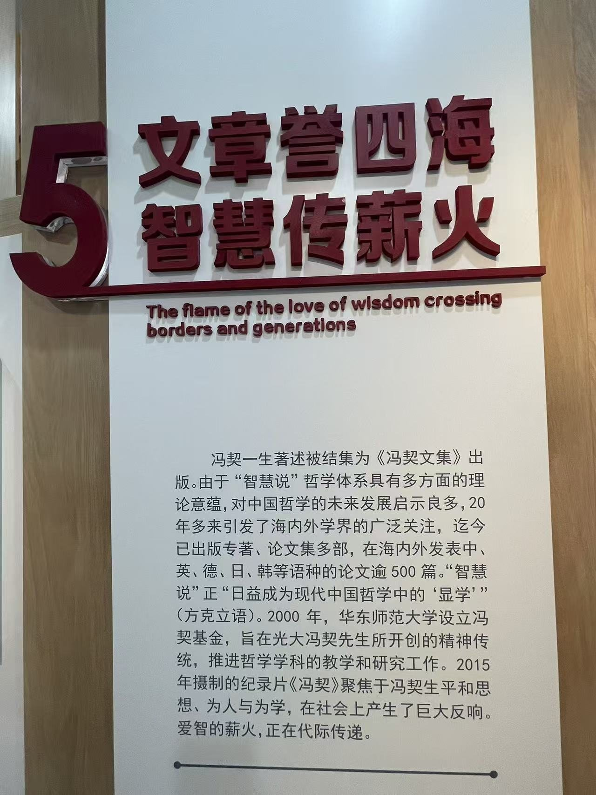

THREE TREATISES智慧说三篇
- 《认识世界和认识自己》
- 《逻辑思维的辩证法》
- 《人的自由和真善美》
构成“智慧说”哲学体系的核心。
冯契（1915—1995），当代中国哲学家、哲学史家，华东师范大学哲学学科的奠基人。陈列室以五个展陈单元，讲述他从古越农家走上问道之路、建立“智慧说”哲学体系、以“两化”育人的一生。
点开任意展区，镜头会从圆楼外靠近、穿过玻璃门厅，再进入这个展区的实景照片。
全部照片为冯契学术成就陈列室及所在建筑实景拍摄；展区文字摘自展板。
“文革”结束后，已过花甲之年的冯契在人生最后二十年写成原创性的哲学体系。它以“智慧说三篇”为核心，以“哲学史两种”为代表，把哲学与人格紧密结合。
构成“智慧说”哲学体系的核心。
以哲学史研究支撑哲学体系，史论结合。
既是他建构哲学体系的原则，也是他立德树人、为学与为人相统一的教育原则。
不论处境如何，始终保持心灵自由思考，是爱智者的本色。
时间线按展板与公开资料整理，五个展陈单元大致对应这条路线。
11 月 4 日生于浙江诸暨一个农民家庭。同年《青年杂志》创刊，新文化运动拉开序幕。第一单元 · 古越哺英才
考入清华大学哲学系，师从金岳霖、冯友兰；积极投身“一二·九”学生爱国运动。第一单元 · 清华孕志向
抗日战争全面爆发。12 月在山西临汾等地参加“牺牲救国同盟会”工作。第二单元 · 颠沛救亡路
春天奔赴延安，7 月进入鲁迅艺术学院学习。
11 月回到昆明西南联大复学，追随金岳霖、冯友兰、汤用彤研究哲学，写成研究生毕业论文《智慧》。第二单元 · 确然问道心
来到新成立的华东师范大学，开创哲学学科。
提出“理论不仅要化为方法，还要化为内在的德性”，简称“两化”。第四单元 · “两化”育新人
“文革”中数百万字手稿散失。此后二十年写成“智慧说三篇”与“哲学史两种”。第三单元 · 会通中西马
冯契先生逝世，著述后结集为《冯契文集》出版。第五单元 · 文章誉四海
“智慧说”对中国哲学的未来发展启示良多，二十多年来引发海内外学界广泛关注。

“智慧说”正日益成为现代中国哲学中的“显学”。
方克立语，引自第五单元展板